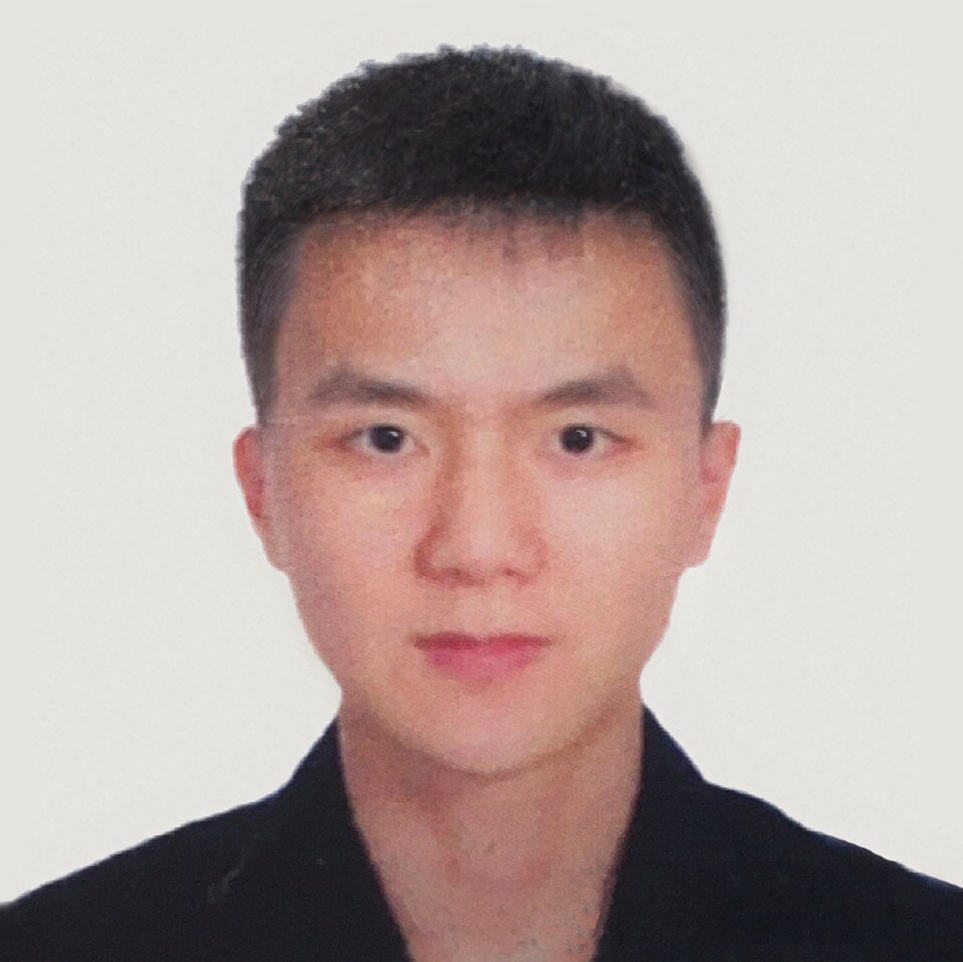

Chao Liu
Ph.D. candidate, Fudan University


Chao Liu
Ph.D. candidate, Fudan University
I am currently a Ph.D candidate with VIP Lab, Academy for Engineering and Technology, the State Key Laboratory of ASIC and System, Fudan University, under the supervision of Prof. Xiaoyang Zeng and Prof. Yibo Fan. In addition, our lab has a close collaboration with Dr. Heming Sun at Waseda University. My research interests include traditional and learned image/video compression.